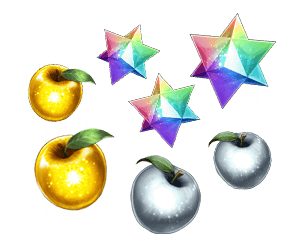
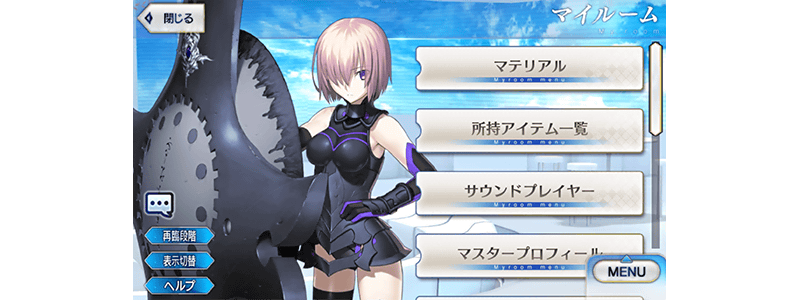

配合預定在2021年4月下旬舉辦的「Fate/Grand Order Waltz in the MOONLIGHT/LOSTROOM×Fate/Grand Order聯動活動」，舉辦「Fate/Grand Order Waltz in the MOONLIGHT/LOSTROOM×Fate/Grand Order聯動活動開幕前夕宣傳活動」！
◆舉辦期間◆
2021年4月21日(三) 17:00～5月5日(三) 11:59
※本頁面皆為開發中圖片。會有與實際圖片相異的情況。
■「Fate/Grand Order Waltz in the MOONLIGHT/LOSTROOM」概要
「Fate/Grand Order Waltz in the MOONLIGHT/LOSTROOM」是為了記念「Fate/Grand Order」5周年所製作的iOS/Android用Fate合奏動作遊戲。
目前在App Store、Google Play好評配信中！
請務必藉此機會享受月之光的舞蹈會吧！
【詳情在官方網站】
https://www.fate-go.jp/fgow/

Fate/Grand Order
Waltz in the MOONLIGHT/LOSTROOM
(App Store、Google Play)
價格:免費(App內無課金)

◆有關從者真名的注意◆
在2018年12月31日(二) 23:00以後新配信的主線故事及期間限定活動、一部份關卡、宣傳活動及召喚中，會顯示隱藏真名的對象從者真名。
※2018年12月31日(一) 22:59前已經配信的主線故事、復刻活動、一部份關卡中不在此限。
為了紀念「Fate/Grand Order Waltz in the MOONLIGHT/LOSTROOM×Fate/Grand Order聯動活動」的舉辦，實施特別登入獎勵。
在下述期間中登入7次(1天算1次)的話，贈送最多白銀果實2個、黃金果實2個、聖晶石3個！

◆舉辦期間◆
2021年4月22日(四) 3:00～5月6日(四) 2:59
※在舉辦期間內合計7天內登入的話，可領取所有的登入獎勵。
◆贈送對象◆
2021年5月5日(三) 2:59前通過「特異點F 炎上汙染都市 冬木」的御主對象
※上述時間前，在管理室(ターミナル)畫面的關卡橫幅必須要有「CLEAR」的文字顯示。
| 登入次數 | 贈送內容 | |
|---|---|---|
| 第1次 |

|
白銀果實 1個 |
| 第2次 |

|
黃金果實 1個 |
| 第3次 |

|
聖晶石 1個 |
| 第4次 |
|
白銀果實 1個 |
| 第5次 |
|
黃金果實 1個 |
| 第6次 |
|
聖晶石 1個 |
| 第7次 |
|
聖晶石 1個 |
※登入獎勵會在每天3:00配發。 ※合計7天內能領取，但根據成為贈送對象的時間點，可能無法到此上限。
為了記念「Fate/Grand Order Waltz in the MOONLIGHT/LOSTROOM×Fate/Grand Order聯動活動」的舉辦，個人空間(マイルーム)變更成特別樣式！
◆期間◆
2021年4月21日(三) 17:00～活動開始前

在迦勒底之門內每日出現的關卡「蒐集種火」的消耗AP以期間限定變成1/2！(就算在戰鬥中撤退的情況，也會是同様的消耗量)
◆舉辦期間◆
2021年4月21日(三) 17:00～5月5日(三) 11:59
◆對象關卡◆
蒐集種火<槍・殺篇>初級、中級、上級、超級
蒐集種火<劍・騎篇>初級、中級、上級、超級
蒐集種火<弓・術篇>初級、中級、上級、超級
蒐集種火<隨機篇>初級、中級、上級、超級
下述的期間中，在進行強化「Fate/Grand Order Waltz in the MOONLIGHT/LOSTROOM」關聯從者時，大成功(經驗值2倍加成)・極大成功(經驗值3倍加成)的發生率以期間限定變成2倍！
請務必藉此機會強化對象從者吧！
◆舉辦期間◆
2021年4月21日(三) 17:00～5月5日(三) 11:59
◆對象從者◆
| 職階 | 稀有度 | 從者名 |
|---|---|---|
| Saber | ★★★★★ | 阿蒂拉 |
| ★★★★★ | 阿爾托莉亞・潘德拉剛 | |
| ★★★★★ | 沖田總司 | |
| ★★★★ | 尼祿・克勞狄烏斯 | |
| Archer | ★★★★★ | 伊絲塔 |
| ★★★ | 尤瑞艾莉 | |
| Lancer | ★★★★★ | 斯卡薩哈 |
| Rider | ★★★★★ | 女王梅芙 |
| ★★★ | 牛若丸 | |
| Caster | ★★★★★ | Miss鶴 |
| ★★★★ | 海倫娜・布拉瓦茨基 | |
| ★★★★ | 尼托克里絲 | |
| Assassin | ★★★★★ | 酒吞童子 |
| ★★★ | 靜謐的哈桑 | |
| Berserker | ★★★★ | 玉藻貓 |
| Ruler | ★★★★★ | 貞德 |
| Avenger | ★★★★★ | 貞德〔Alter〕 |
| Shielder | ★★★ | 瑪修・基利艾拉特 |
※4月26日(一) 19:30追記

下述的期間中，在關卡開始時的支援選擇畫面，選擇其他御主的「Fate/Grand Order Waltz in the MOONLIGHT/LOSTROOM」關聯從者做支援情況、其他御主選擇自己的對象從者做支援情況的友情點數獲得量變成2倍。藉此機會入手更多友情點數吧！
◆舉辦期間◆
2021年4月21日(三) 17:00～5月5日(三) 11:59
◆對象從者◆
| 職階 | 稀有度 | 從者名 |
|---|---|---|
| Saber | ★★★★★ | 阿蒂拉 |
| ★★★★★ | 阿爾托莉亞・潘德拉剛 | |
| ★★★★★ | 沖田總司 | |
| ★★★★ | 尼祿・克勞狄烏斯 | |
| Archer | ★★★★★ | 伊絲塔 |
| ★★★ | 尤瑞艾莉 | |
| Lancer | ★★★★★ | 斯卡薩哈 |
| Rider | ★★★★★ | 女王梅芙 |
| ★★★ | 牛若丸 | |
| Caster | ★★★★★ | Miss鶴 |
| ★★★★ | 海倫娜・布拉瓦茨基 | |
| ★★★★ | 尼托克里絲 | |
| Assassin | ★★★★★ | 酒吞童子 |
| ★★★ | 靜謐的哈桑 | |
| Berserker | ★★★★ | 玉藻貓 |
| Ruler | ★★★★★ | 貞德 |
| Avenger | ★★★★★ | 貞德〔Alter〕 |
| Shielder | ★★★ | 瑪修・基利艾拉特 |
※4月26日(一) 19:30追記 ※非好友的御主也是友情點數獲得量2倍的對象。 ※請注意NPC從者即使是對象從者也在友情點數獲得量2倍的對象外。
下述的期間中，「Fate/Grand Order Waltz in the MOONLIGHT/LOSTROOM」關聯從者的強化關卡消耗AP量變成1/2！(就算在戰鬥中撤退的情況，也會是同様的消耗量)
請藉此機會通過尚未通過的從者強化關卡吧！
◆舉辦期間◆
2021年4月21日(三) 17:00～5月5日(三) 11:59
◆對象從者◆
| 職階 | 稀有度 | 從者名 |
|---|---|---|
| Saber | ★★★★★ | 阿蒂拉 |
| ★★★★★ | 阿爾托莉亞・潘德拉剛 | |
| ★★★★★ | 沖田總司 | |
| ★★★★ | 尼祿・克勞狄烏斯 | |
| Archer | ★★★ | 尤瑞艾莉 |
| Lancer | ★★★★★ | 斯卡薩哈 |
| Rider | ★★★★★ | 女王梅芙 |
| ★★★ | 牛若丸 | |
| Caster | ★★★★ | 海倫娜・布拉瓦茨基 |
| Assassin | ★★★★★ | 酒吞童子 |
| ★★★ | 靜謐的哈桑 | |
| Berserker | ★★★★ | 玉藻貓 |
| Ruler | ★★★★★ | 貞德 |
下述的期間中，「Fate/Grand Order Waltz in the MOONLIGHT/LOSTROOM」關聯從者的幕間物語消耗AP量變成1/2！(就算在戰鬥中撤退的情況，也會是同様的消耗量)
請藉此機會滿足開放條件，通過對象從者的物語吧！
◆舉辦期間◆
2021年4月21日(三) 17:00～5月5日(三) 11:59
◆對象從者◆
| 職階 | 稀有度 | 從者名 |
|---|---|---|
| Saber | ★★★★★ | 阿蒂拉 |
| ★★★★★ | 阿爾托莉亞・潘德拉剛 | |
| ★★★★ | 尼祿・克勞狄烏斯 | |
| Archer | ★★★★★ | 伊絲塔 |
| ★★★ | 尤瑞艾莉 | |
| Lancer | ★★★★★ | 斯卡薩哈 |
| Rider | ★★★★★ | 女王梅芙 |
| ★★★ | 牛若丸 | |
| Caster | ★★★★ | 海倫娜・布拉瓦茨基 |
| ★★★★ | 尼托克里絲 | |
| Assassin | ★★★★★ | 酒吞童子 |
| ★★★ | 靜謐的哈桑 | |
| Berserker | ★★★★ | 玉藻貓 |
| Ruler | ★★★★★ | 貞德 |
| Avenger | ★★★★★ | 貞德〔Alter〕 |
「Fate/Grand Order Waltz in the MOONLIGHT/LOSTROOM×Fate/Grand Order聯動活動」的期間中，下表的從者在活動關卡中，會得到活動加成！
強化對象從者，向活動挑戰吧！
※活動加成的效果量因從者而異。
【活動加成的對象從者】
| 職階 | 稀有度 | 從者名 |
|---|---|---|
| Saber | ★★★★★ | 阿蒂拉 |
| ★★★★★ | 阿爾托莉亞・潘德拉剛 | |
| ★★★★★ | 沖田總司 | |
| ★★★★ | 高文 | |
| ★★★★ | 齊格飛 | |
| ★★★★ | 女王梅芙 | |
| ★★★★ | 尼祿・克勞狄烏斯 | |
| ★★★★ | 羅摩 | |
| ★★★★ | 蘭斯洛特 | |
| ★★★ | 貝德維爾 | |
| Archer | ★★★★★ | 阿周那 |
| ★★★★★ | 伊絲塔 | |
| ★★★★ | 馬嘶 | |
| ★★★★ | 災星簡 | |
| ★★★★ | 崔斯坦 | |
| ★★★ | 尤瑞艾莉 | |
| ★★★ | 子吉爾 | |
| ★★★ | 比利小子 | |
| ★★ | 帕里斯 | |
| ★ | 織田信勝 | |
| Lancer | ★★★★★ | 迦爾納 |
| ★★★★★ | 斯卡薩哈 | |
| ★★★★★ | 布倫希爾德 | |
| ★★★★ | 伊莉莎白・巴托里 | |
| ★★★★ | 貞德・Alter・Santa・Lily | |
| ★★★★ | 瓦爾基里 | |
| Rider | ★★★★★ | 奧茲曼迪亞斯 |
| ★★★★★ | 女王梅芙 | |
| ★★★★★ | 李奧納多・達・文西 | |
| ★★★ | 亞歷山大 | |
| ★★★ | 牛若丸 | |
| Caster | ★★★★★ | 雪赫拉莎德(不夜城的Caster) |
| ★★★★★ | 李奧納多・達・文西 | |
| ★★★★ | 海倫娜・布拉瓦茨基 | |
| ★★★★ | 童謠 | |
| ★★★★ | 尼托克里絲 | |
| ★★ | 威廉・莎士比亞 | |
| Assassin | ★★★★★ | 開膛手傑克 |
| ★★★★★ | 酒吞童子 | |
| ★★★★ | 尼托克里絲 | |
| ★★★ | 靜謐的哈桑 | |
| ★ | 佐佐木小次郎 | |
| Berserker | ★★★★★ | 謎之女主角X〔Alter〕 |
| ★★★★ | 茨木童子 | |
| ★★★★ | 織田信長 | |
| ★★★★ | 鬼女紅葉 | |
| ★★★★ | 玉藻貓 | |
| ★★★ | 清姬 | |
| Ruler | ★★★★★ | 貞德 |
| Avenger | ★★★★★ | 貞德〔Alter〕 |
| Foreigner | ★★★★★ | 艾比蓋兒・威廉斯 |
| ★★★★★ | 葛飾北齋 | |
| ★★★★★ | 航海家 | |
| Shielder | ★★★ | 瑪修・基利艾拉特 |
※就算成為對象從者也會有未在本活動的主線劇本登場的情況。 ※自4月21日(三) 17:00，在從者選擇畫面和從者強化畫面等，追加活動加成篩選器。由於是只顯示於活動活躍從者的便利功能，敬請活用。
強化「★5(SSR)貞德(Ruler)」「★4(SR)海倫娜・布拉瓦茨基(Caster)」的特別關卡「從者強化關卡」，在迦勒底之門永久追加。
不僅進行對象從者的強化，也可獲得聖晶石做為關卡通過報酬。
※請注意在從者強化關卡沒有文字冒險部份。
◆追加時間◆
2021年4月21日(三) 17:00～
◆開放條件◆
持有的強化對象從者，必須使其最終再臨。
※未持有對象從者的話，不會出現關卡。
※關卡沒有舉辦期限。
其他還有，期間限定「FGO Waltz in the MOONLIGHT/LOSTROOM聯動活動開幕前夕Pick Up召喚(每日交替)」同時舉辦！
另外，「Fate/Grand Order Waltz in the MOONLIGHT/LOSTROOM×Fate/Grand Order聯動活動」也預定舉辦！
關於詳情，請自下述橫幅確認。
■「FGO Waltz in the MOONLIGHT/LOSTROOM聯動活動開幕前夕Pick Up召喚(每日交替)」詳細情報
■「Fate/Grand Order Waltz in the MOONLIGHT/LOSTROOM×Fate/Grand Order聯動活動」詳細情報